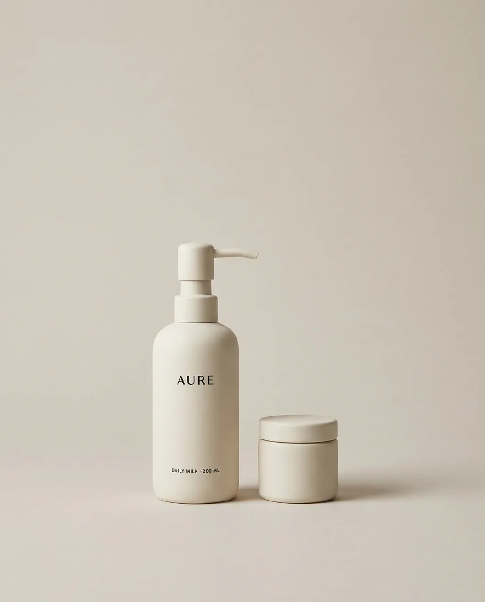
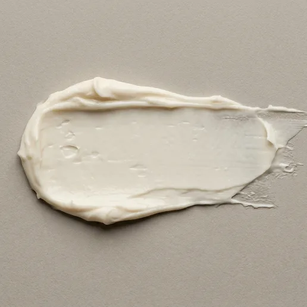
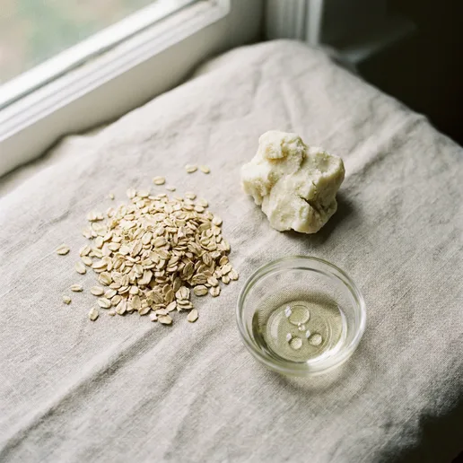
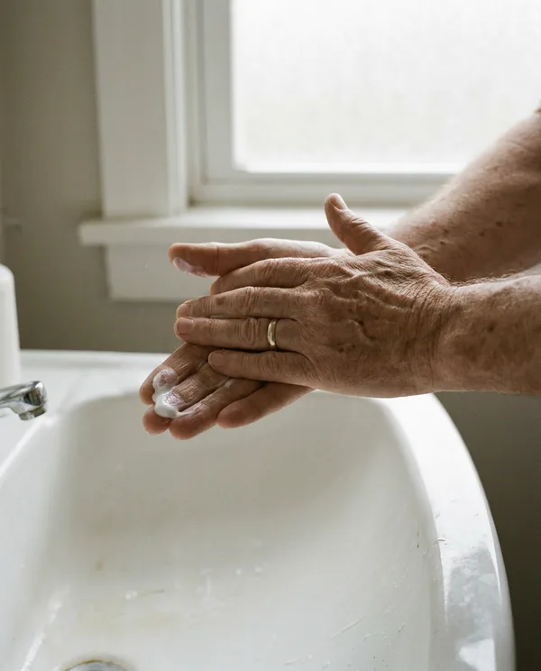

AURE |
 |
New formulation
Body care | Daily Milk Body CreamA light cream for daily use after bathing. Colloidal oat and unrefined shea soften dry skin, and the finish stays soft rather than slick, so you can dress straight away. 200 mL · $38 Discover Daily Milk |
|
| Suits | Dry and normal skin, including sensitive | | Skin feel | Softened, comfortable, non-greasy | | Aroma | Faint and clean. Oat, with a trace of cedar | | Key ingredients | Colloidal oat, unrefined shea butter, squalane | | Size | 200 mL pump bottle, 60 mL travel jar |
|
 Texture
Light cream with a soft, dry finish. |  Ingredients
Colloidal oat, unrefined shea, plant squalane. |
|
 | Application | 01 | Apply to damp skin after bathing. | | 02 | Warm a small amount between the palms. | | 03 | Massage in with long strokes until absorbed. |
|
|
| Complimentary samples with every order | Free returns within 30 days | Gift wrapping on request |
|
AURE Stores · Consultations · Contact An independent email design concept.
Preferences · Unsubscribe |